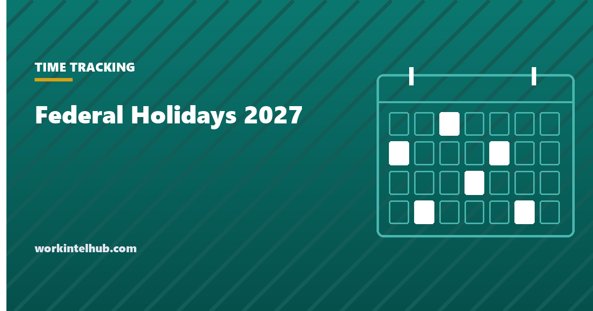

Federal Holidays 2027

There are eleven federal holidays in 2027. Three of them fall on a weekend and are observed on the nearest weekday, which is what makes 2027 slightly unusual: Juneteenth and Christmas are both observed on a Friday before the actual date, and Independence Day is observed on Monday 5 July.
The table gives the observed dates. The rest of the page covers what an employer is actually required to do about them, which for most private employers is nothing, and the pay rules that apply when people work them.
The eleven federal holidays in 2027
| Holiday | Observed in 2027 | Rule |
|---|---|---|
| New Year's Day | Friday, 1 January | Falls on a Friday |
| Birthday of Martin Luther King, Jr. | Monday, 18 January | Third Monday of January |
| Washington's Birthday (Presidents Day) | Monday, 15 February | Third Monday of February |
| Memorial Day | Monday, 31 May | Last Monday of May |
| Juneteenth National Independence Day | Friday, 18 June | 19 June is a Saturday; observed the Friday before |
| Independence Day | Monday, 5 July | 4 July is a Sunday; observed the Monday after |
| Labor Day | Monday, 6 September | First Monday of September |
| Columbus Day | Monday, 11 October | Second Monday of October |
| Veterans Day | Thursday, 11 November | Falls on a Thursday |
| Thanksgiving Day | Thursday, 25 November | Fourth Thursday of November |
| Christmas Day | Friday, 24 December | 25 December is a Saturday; observed the Friday before |
These are the dates published by the Office of Personnel Management for federal employees. Its rule for weekend holidays is that a Saturday holiday is observed on the preceding Friday and a Sunday holiday on the following Monday. One consequence that catches people out: New Year's Day 2028 is a Saturday, so federal employees observe it on Friday 31 December 2027, giving the federal calendar a twelfth day off inside 2027.
Who has to observe them
Federal agencies and, in practice, banks and the postal service. Nobody else. State governments set their own lists, and most private employers choose. The common private set is six: New Year's Day, Memorial Day, Independence Day, Labor Day, Thanksgiving and Christmas. Many add the day after Thanksgiving and Christmas Eve; fewer observe Columbus Day or Veterans Day; Juneteenth adoption has grown since 2021 but is still not universal.
Whatever the list, it belongs in the employee handbook, with the observed dates for the year published in advance, because an unstated holiday policy is the one that generates the most payroll queries in December. The working-day effect of the list is on our working days in 2027 page.
What the law requires for holiday pay
The Department of Labor states it plainly: "The Fair Labor Standards Act (FLSA) does not require payment for time not worked, such as vacations or holidays (federal or otherwise)." Nor does it require premium pay for working on a holiday. Both are matters of policy or contract, with these exceptions.
- Rhode Island requires time and a half for non-exempt employees who work on Sundays and on its listed holidays, with retail employers allowed to count those premium hours against weekly overtime. It is the only state with a general holiday premium.
- Massachusetts had a retail Sunday and holiday premium under its blue laws, phased down from 2019 and eliminated on 1 January 2023. Retailers there still need permits to open on certain holidays and cannot require work on some of them, but the premium is gone.
- Federal contractors under the Service Contract Act or Davis-Bacon may owe paid holidays where the applicable wage determination includes them.
- Union contracts and offer letters that promise holiday pay are enforceable as contracts, even though no statute requires the promise.
Two FLSA rules do apply once you pay it. Paid holiday hours that were not worked do not count toward the 40-hour overtime threshold, so an employee paid for a Monday holiday who then works 36 hours Tuesday to Friday has no overtime. And under 29 CFR 778.203, a holiday premium of "at least time and one-half" paid for working the day is excluded from the regular rate and may be credited against overtime due in the same week, which is why paying time and a half for holiday work rarely creates a double premium. The calculator above applies both.
Holiday pay calculator
Federal law requires none of this; the calculator applies whatever your policy says. Paid holiday hours not worked do not count toward the 40-hour overtime threshold. A holiday premium of at least time and a half can be credited against overtime due in the same week, which the last line shows.
Writing the policy so it does not generate disputes
- List the observed dates for the year, not just the holidays. "Christmas Day" in 2027 means Friday 24 December for most employers, and the policy should say so.
- Say who is eligible. Full-time from day one, part-time pro rata, or after a waiting period. Silence produces a claim from every new hire in December.
- Say what happens when someone works it: straight time plus a day in lieu, time and a half, or double time. Any of them is lawful; not saying is the problem.
- Handle the day-before and day-after rule carefully. Policies that withhold holiday pay if the employee is absent the adjacent day are lawful in most states but cannot be applied to protected absences, which is the same trap covered in our attendance policy template.
- State that paid holidays do not count as hours worked for overtime, so nobody expects a 48-hour cheque for a 40-hour week with a holiday in it.
The holiday list also drives the PTO year: employees plan leave around it, and a policy that publishes the list late pushes leave requests into the same two weeks. The vacation tracking guide covers the scheduling side.
Key takeaways
- Eleven federal holidays in 2027. Juneteenth is observed Friday 18 June, Independence Day Monday 5 July, Christmas Friday 24 December.
- New Year's Day 2028 is a Saturday, so federal employees also get Friday 31 December 2027.
- Only federal agencies must observe them. Private employers choose, and most close for six.
- The FLSA requires neither paid holidays nor premium pay for holiday work. Rhode Island is the only state with a general holiday premium; Massachusetts ended its retail premium in 2023.
- Paid holiday hours not worked do not count toward the 40-hour overtime threshold.
- A holiday premium of at least time and a half is excluded from the regular rate and creditable against overtime in the same week.
- Publish the observed dates and the eligibility and holiday-work rules in the handbook before the year starts.
Frequently asked questions
What are the federal holidays in 2027?
New Year's Day (Friday 1 January), Martin Luther King Jr. Day (18 January), Washington's Birthday (15 February), Memorial Day (31 May), Juneteenth (observed Friday 18 June), Independence Day (observed Monday 5 July), Labor Day (6 September), Columbus Day (11 October), Veterans Day (Thursday 11 November), Thanksgiving (25 November) and Christmas (observed Friday 24 December).
Why is Christmas observed on 24 December in 2027?
Because 25 December 2027 is a Saturday. The federal rule observes a Saturday holiday on the preceding Friday and a Sunday holiday on the following Monday, which is why Juneteenth is observed on 18 June and Independence Day on 5 July in 2027.
Is 31 December 2027 a federal holiday?
For federal employees, effectively yes. New Year's Day 2028 falls on a Saturday, so it is observed on Friday 31 December 2027. Private employers are not required to follow suit.
Do employers have to pay for holidays?
Under federal law, no. The FLSA does not require payment for holidays not worked or premium pay for holidays worked. Holiday pay comes from company policy, offer letters, union contracts, and in Rhode Island from state law. Some federal contracts also require it.
Do you get time and a half for working on a holiday?
Only if your employer's policy or contract provides it, or if you are a non-exempt employee in Rhode Island. Federal law treats a holiday like any other day. Where time and a half is paid, that premium can be credited against overtime due in the same week.
Do paid holidays count toward overtime?
No. Overtime under the FLSA is based on hours actually worked. An employee paid eight hours for a holiday who works 36 hours the rest of the week has 36 hours worked and no overtime, even though the pay cheque shows 44.
How many federal holidays are there in 2027?
Eleven. The federal calendar effectively has twelve days off in 2027 because New Year's Day 2028 is observed on 31 December 2027.